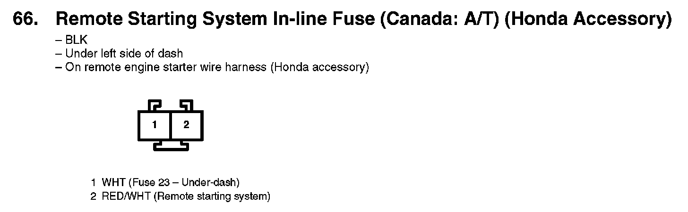
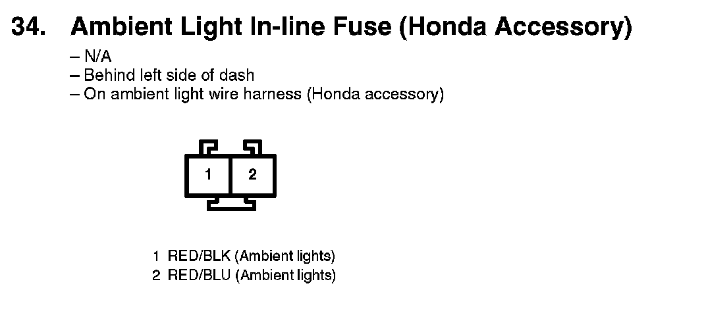
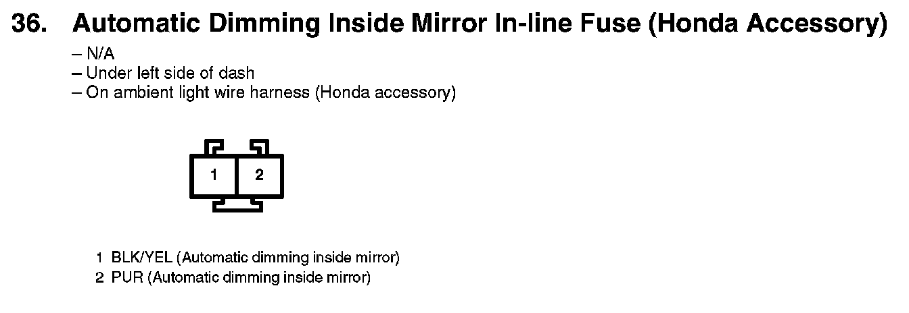
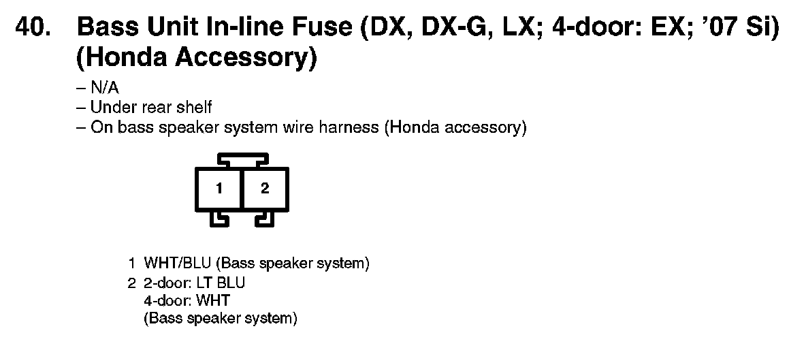

Connector Views
66. Remote Starting System In-line Fuse (Canada: A/T) (Honda Accessory):

34. Ambient Light In-line Fuse (Honda Accessory):

36. Automatic Dimming Inside Mirror In-line Fuse (Honda Accessory):

40. Bass Unit In-line Fuse (DX, DX-G, LX; 4-door: EX; '07 Si):
